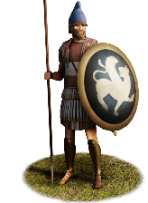
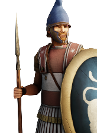
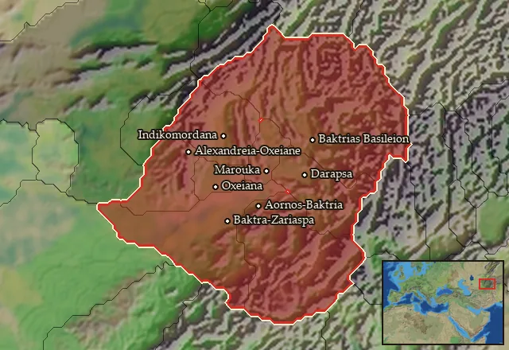

RTR: Imperium Surrectum
RTR: Imperium SurrectumBactrian Hoplites


Class: spearmen · Category: infantry · Men per unit: 40
Description
Bactrian Hoplites are recruited from among the Greek settlers in Bactria, armed with the usual aspis shields, dory spears, and xiphos swords, and protected by linothorakes and Bactrian or Konos helmets. They are best used to hold the line and pin down the enemy, to allow other units to deal the decisive blow. As the citizen militias of Greek poleis all around the ancient world, they can be relied upon to defend their local communities, but often lack the skill and motivation that is essential for long campaigns abroad.
Historical background
Greek settlement in Bactria was actually older than the campaigns of Alexander, the Persian great-kings having forcibly settled some Ionian Greeks in the region after the Great Ionian Revolt of the 490s BC (Curt. 7.5.28-35). Later, Alexander dotted the Bactrian landscape with a number of Greek colonies, mostly intended to exert Macedonian control over this remote and rebellious region. According to Plutarch, Bactria was the region in which Alexander founded the largest number of settlements (Plut. Mor. 328). Living in these colonies was not very popular, though, resulting in multiple revolts of the colonists, whom are reported to have tried to return to the Mediterranean. After first revolting in 326/25 BC upon the rumour of Alexanders death in India, the colonists of Bactria started another revolt in 323 BC, once they heard of the king’s death in Alexandria. This revolt was brutally repressed on the orders of the regent Perdiccas in 322 BC, resulting in the wholesale slaughter of 20,000 mutinous colonists at the hands of his forces (Diod. 18.7.1-9). The mere fact that this disastrous battle did not spell the end of Greek life in Bactria hints at the scale of Greek settlement in the region.
The Greek influence in Bactria remained strong until at least the late second century BC, when the first Chinese explorer entered the region and named it Dayuan, which can reasonably be assumed to stem from a transliteration of the Iranian word Yona, meaning Greek (Yang, Chinese Historical Sources and the Greeks (2020), p. 447). Therefore, we have decided to include a Bactrian hoplite unit in RIS, resembling the classic Greek infantry found in poleis across the ancient world.
Stats
| Rank in roster | Rank in roster | Rank in roster | Rank in roster | ||||||||
|---|---|---|---|---|---|---|---|---|---|---|---|
| Men per unit | 40 | ███······· 31% | Attack | 10 | ███······· 27% | Charge bonus | 14 | ██████···· 59% | Defence | 41 | ████████·· 77% |
| · armour | 10 | ██████···· 55% | · defence skill | 26 | ████████·· 78% | · shield | 5 | ██████···· 58% | Morale | 11 | ████······ 40% |
| Discipline | Normal | Training | Highly trained | Recruitment cost | 1,775 dn | ████······ 35% | Upkeep per turn | 650 dn | █████····· 52% | ||
| Turns to recruit | 2 |
Weapons
| Primary | Secondary | Primary | Secondary | Primary | Secondary | Primary | Secondary | ||||
|---|---|---|---|---|---|---|---|---|---|---|---|
| Attack | 10 | — | Charge bonus | 14 | — | Type | melee · blade | — | Damage | piercing | — |
| Properties | Light spear (braced against cavalry charges from the front) · +8 attack against cavalry | — |
Defence
| Primary | Secondary | Primary | Secondary | Primary | Secondary | Primary | Secondary | ||||
|---|---|---|---|---|---|---|---|---|---|---|---|
| Total | 41 | — | Armour | 10 | — | Defence skill | 26 | — | Shield | 5 | — |
Condition and terrain
| Hit points | 1 | Ground: scrub / sand / forest / snow | -1 / -1 / -4 / -1 | Charge distance | 30 | Formations | Square |
Technical stats
| Time between blows (primary / secondary) | 2.5 s / — | Extra fatigue in hot climates | -1 | Collision mass per man (1.0 is normal) | 1.12 | Spacing between men: close / loose | 1 × 1.05 m / 2 × 2.4 m |
| Default ranks | 5 |
In battle: Can sap · Very good stamina
Who can recruit it
A core roster unit for one faction, which can raise it anywhere it holds the right building:
Any faction holding one of the provinces below can field it.
Exactly what a settlement must have, route by route (5)
| Building | Also requires | Building | Also requires | Building | Also requires | Building | Also requires |
|---|---|---|---|---|---|---|---|
| Any settlement | Tier 2 Military Industrial Complex · Greco Bactrian area of recruitment · Any Government (Dependency, Indirect Rule or Direct Rule) · Tier 2 Colony not built | Indirect Rule | Tier 2 Military Industrial Complex · Tier 1 Colony | Direct Rule | Tier 2 Military Industrial Complex · Tier 1 Colony | Homeland | Tier 2 Military Industrial Complex |
| Any settlement | Tier 2 Military Industrial Complex · Greco Bactrian area of recruitment · Dependency or Indirect Rule · Tier 1 Colony not built |
Areas of recruitment

| Zone | Provinces | ||||||
|---|---|---|---|---|---|---|---|
| Greco bactrian | 8 |